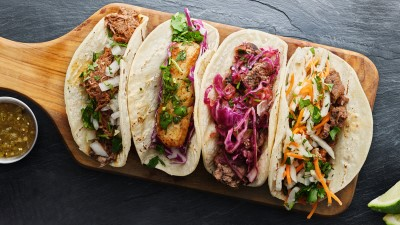
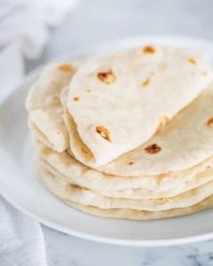
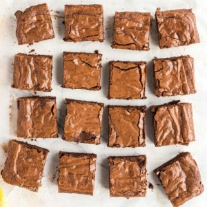

De beste gerechten van Noord-Amerika!
Burger (Amerika)
-
De hamburger is een sappig gerecht dat bestaat uit, idealiter, medium-rare geschroeide runderlapjes in verse, licht geroosterde broodjes, vergezeld van schijfjes ui en ketchup of Dijon mosterd. Natuurlijk is er een verscheidenheid aan andere specerijen en groenten, zoals slag en tomaten.
Taco (Mexico)
-
Een taco is eigenlijk alles wat op een zachte tortilla wordt gegeten, en er is een oneindige variëteit aan taco's. In Sonora, in het noorden van Mexico, eten ze de klassieke carne asada: Dungesneden vlees gegrild boven kolen en belegd met salsa, uien, guacamole en een partje limoen.
- 
Cupcakes (Amerika)
-
Een cupcake is een klein cakeje dat gebakken wordt in een dun papieren vormpje of een aluminium cupje. Eén cupcake is genoeg voor één persoon.
Tortilla (Mexico)
-
De tortilla, oorspronkelijk een plat brood van maïs, is een van de essentiële broodsoorten die al duizenden jaren in de Mexicaanse cultuur aanwezig is. De eerste tortilla werd gemaakt van het hoofdbestanddeel van inheemse culturen, de alomtegenwoordige maïs.
- 
Brownies (Amerika)
-
Heerlijk zacht, compact en gevuld met een rijke chocoladesmaak. De geliefde brownie is één van de populairste Amerikaanse desserts.
- 